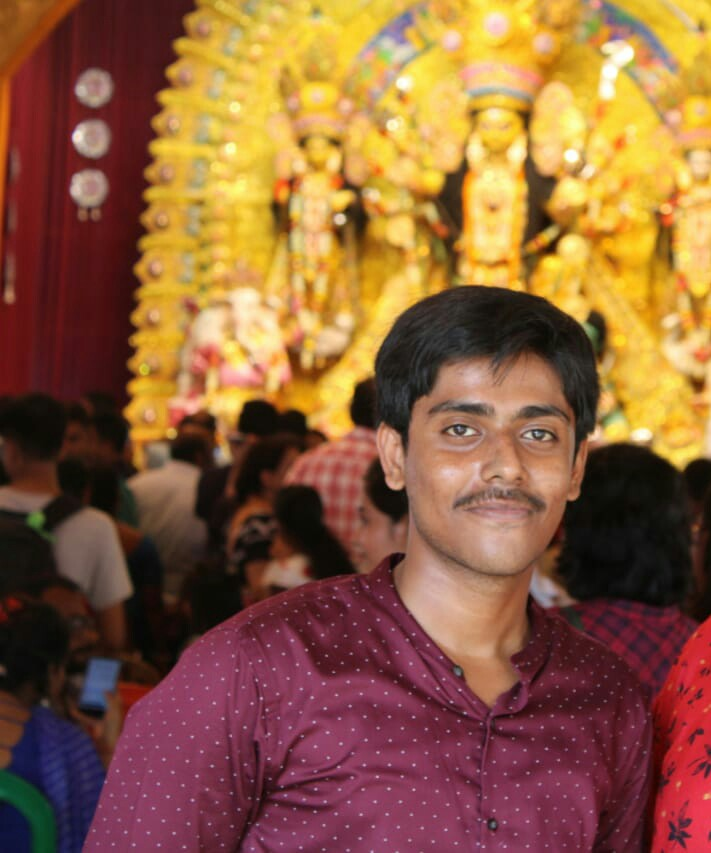

Priyanshu Karmakar
Bansdroni, Kolkata, India

Contact Me
Summary
Hi, I am Priyanshu Karmakar. I like to solve and do research on Theoritical Mathematics and Computer Sc
Problems. I am eager to use my theory knowledege in pratical scenarios which will help my clients.
Education
- Bachelor of Technology: 95.4%, 2019-2023, Kalinga Institute of Industrial
Technology, Bhubaneswar, Odissa
- Higher Secondary: 85%, 2019, Patha Bhavan, Kolkata
- Secondary Education: 86% 2017 Patha Bhavan, Kolkata
Skills
- C-Programming language
- Python
- Sql
- Plsql
- HTML, CSS, JS
Awards
- Highest Marks in Statistics Class 12 HS Exam, 2019
- Young Innovative Minds award by Pathfinder, 2015